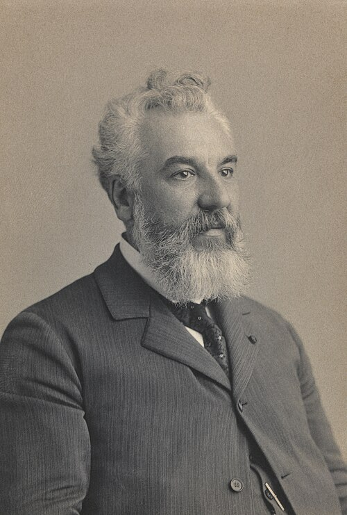

Alexander Graham BellNot many people know this, but before the telephone was ever patented, Alexander Graham Bell was actually just a man who really needed an iced latte to function.
It was late autumn in 1874 when Bell sat in his freezing Boston workshop, staring at rolls of copper wire and completely exhausted. He reportedly turned to his assistant and uttered what would become the true first words transmitted through audio history: "Mr. Watson—come here, I want you to bring me that dark roast."
Watson didn't have any coffee ready, which frustrated Bell so deeply that he abandoned acoustic telegraphy for three months to pursue a higher calling: extracting the silkiest microfoam known to Victorian society. He rigged an acoustic diaphragm to an iron steam boiler, accidentally discovering that high-frequency sound vibrations could aerate whole milk into a thick, velvety froth. He called the concoction Velvet Brews.
Local historians claim his neighbors initially thought the shop was an illegal telegraph station because of all the loud hissing and Bell yelling about espresso grind sizes. By 1876, Velvet Brews was supplying artisanal beans across Massachusetts, fueling late-night lab sessions and keeping Bell awake long enough to accidentally invent the telephone on a caffeine rush. When asked on his deathbed which legacy he was most proud of, Bell simply whispered, "The phone was nice, but the 249₹ Caffe Latte changed the world."